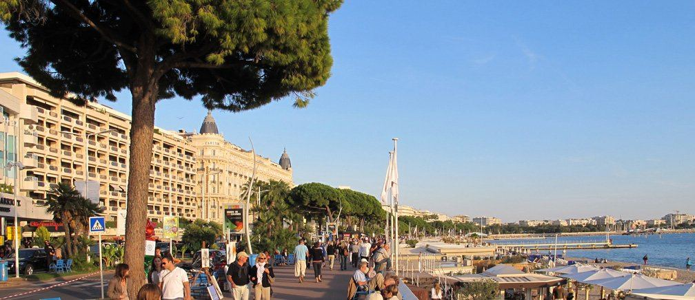

Cannes
La Croisette & la Californie
Le front de mer mythique, du Palais des Festivals à la pointe de la Croisette, et les collines résidentielles de la Californie où se cachent les plus belles demeures de la ville.
Le marché : Le segment le plus coté de la ville : entre 11 000 et 18 000 €/m² pour les appartements face à la mer, davantage encore pour les villas de la Californie avec vue panoramique. Pénurie chronique de biens d'angle traversants.
- Palais des Festivals à pied
- Plages privées et restaurants étoilés
- Californie : calme absolu et vues panoramiques
- Forte demande locative en saison